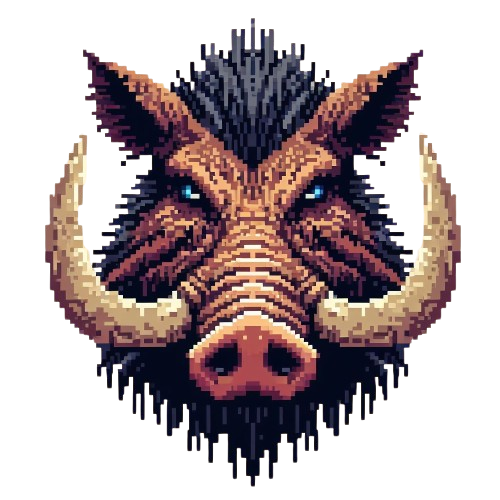
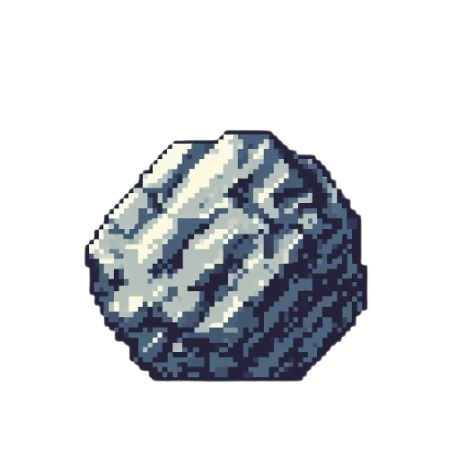
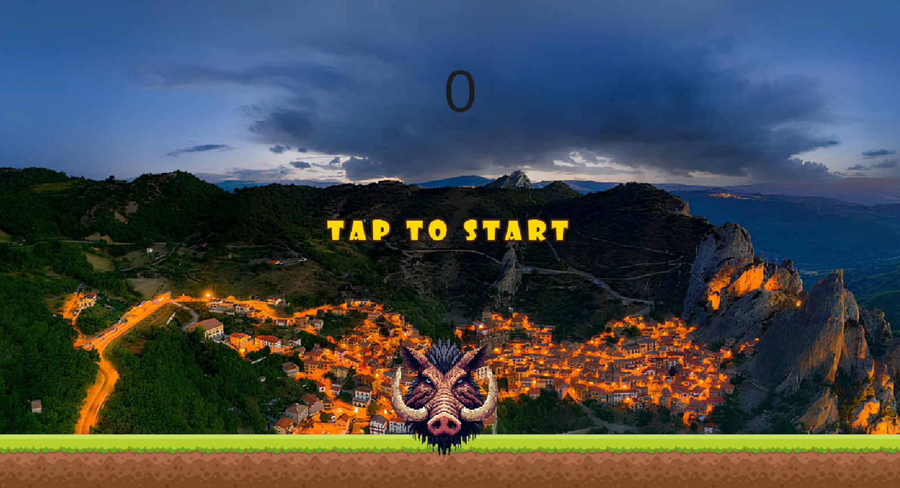

Overview:
"Basilicata Dodge" è un gioco 2D sviluppato su Unity in cui il giocatore controlla un cinghiale e deve schivare dei massi che cadono dall'alto. Il gioco è caratterizzato da una grafica colorata con una colonna sonora di sottofondo che crea un'atmosfera coinvolgente. Il punteggio del giocatore aumenta in base al numero di massi schivati con successo, mentre il gioco diventa sempre più impegnativo man mano che la velocità dei massi aumenta.
Gameplay:
🔹 Il giocatore controlla il cinghiale con il mouse o le frecce della tastiera.
🔹 Il cinghiale può muoversi a destra e a sinistra per schivare i massi che cadono dall'alto.
🔹 I massi cadono a velocità variabile e in posizioni casuali sullo schermo.
🔹 Il giocatore guadagna punti ogni volta che schiva un masso con successo.
🔹 Il gioco termina quando il cinghiale viene colpito da un masso. Il punteggio finale del giocatore viene quindi visualizzato.
Obiettivi del Gioco:
🔹 Schivare più massi possibile per ottenere il punteggio più alto.
🔹 Sfida te stesso e gli amici per vedere chi può ottenere il punteggio più alto.
Controlli:
🔹 Utilizza il mouse per spostare il cinghiale verso destra o sinistra.
🔹 Utilizza le frecce della tastiera (destra e sinistra) per muovere il cinghiale.
Artwork:
🔹 Personaggio Giocabile: Rappresentato da un cinghiale in pixel. È di colore marrone con peli neri e zanne visibili. Gli occhi sono di un vivido colore celeste, capaci di trasmettere intensità e determinazione.
🔹Massi: Massi che cadono dall'alto.
 
🔹Sfondi: Gli sfondi sono disegnati in pixel art per creare un'atmosfera vivace e variabile. Ogni volta che il giocatore riavvia la partita, viene scelto casualmente uno sfondo diverso per mantenere l'esperienza fresca e interessante.
Audio:
🔹Musica di Sottofondo: Una colonna sonora vivace e coinvolgente che accompagna il gameplay.
Interfaccia Utente:
🔹Schermata Principale: Basta cliccare sullo schermo per iniziare
🔹Schermata di Gioco: Mostra il punteggio attuale del giocatore
🔹Schermata di Fine Partita: Visualizza il punteggio finale del giocatore e basta cliccare sullo schermo per iniziare una nuova partita

Meccaniche di Gioco:
🔹I massi cadono in modo casuale dall'alto dello schermo.
🔹La velocità dei massi aumenta man mano che il gioco procede.
🔹Il punteggio del giocatore aumenta ogni volta che schiva con successo un masso.
🔹La difficoltà del gioco aumenta gradualmente per mantenere il giocatore impegnato e coinvolto.